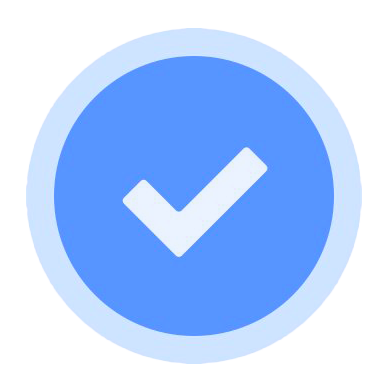

PORTFOLIO
Hello, I`m
Innocent Mugwadi
Web Developer | Web Designer | Project Manager
Network Engineer | Data analyst
Projects
Projects
Through out my journey, I have contributed to several projects.
My interest in development has helped me create technical solutions, that would positively affect our daily livelyhood.
I have personal projects, and those that are open-source which I helped others complete.
Some of these projects are soon to be launched as SAAS(Software As A Service).